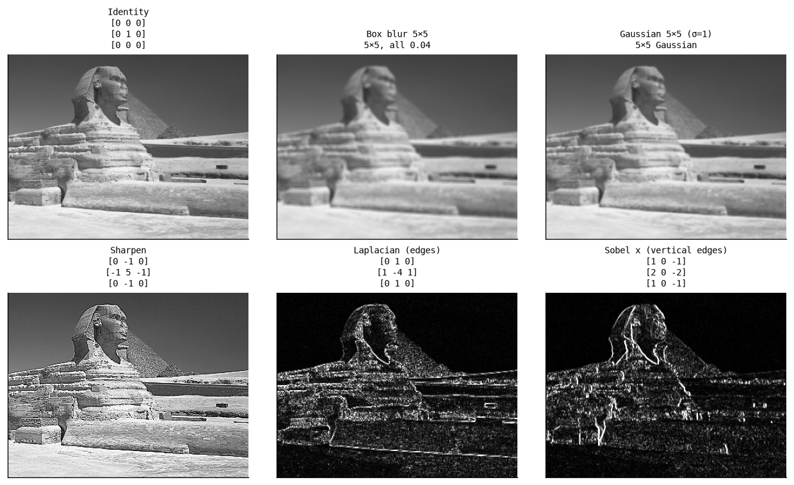
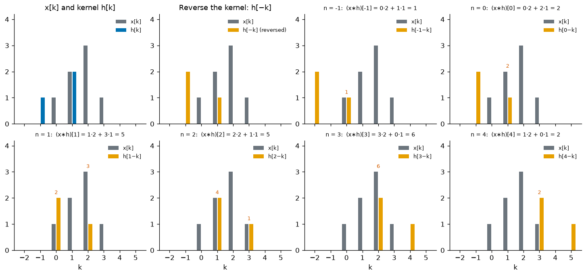
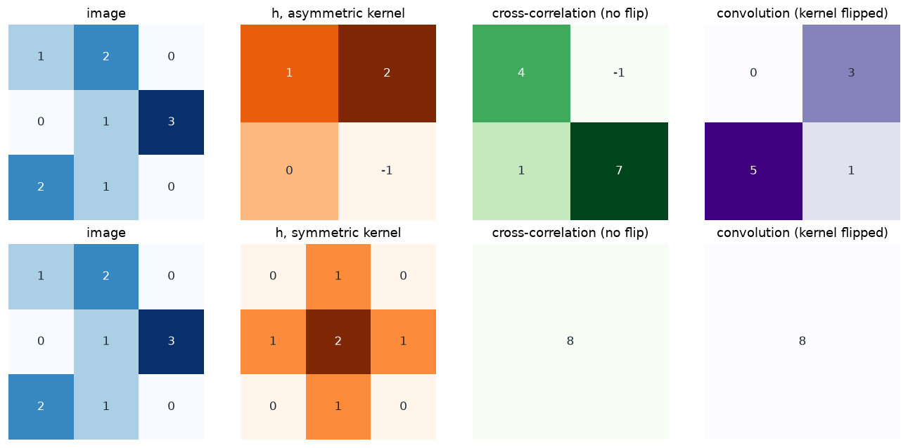
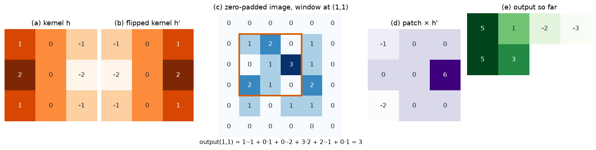
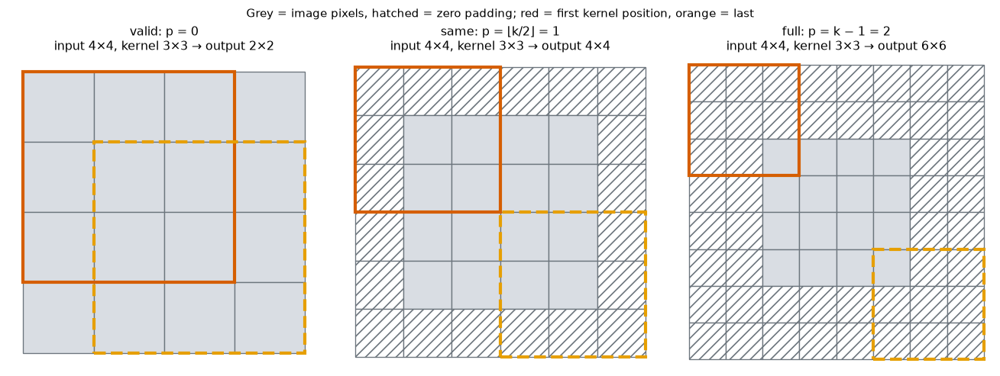

Lesson 01.02
Image processing with convolution
Linear filtering with kernels, the definition of convolution in 1D and 2D, how to do it by hand, and how to work out the output size for valid, same and full padding.
Learning outcomes
After this lesson you should be able to:
- explain what makes a filter linear and what a kernel is;
- compute a 1D convolution from its definition, including kernel reversal and shifting;
- perform a 2D convolution by hand: flip the kernel, slide, multiply and sum;
- distinguish convolution from cross-correlation and say when they coincide;
- calculate the output size of a convolution for valid, same and full zero padding.
Linear image processing
Images are filtered to sharpen or blur them, or to find and enhance edges. The processing in this lesson is linear: each pixel of the output is a linear combination of the pixels in a small neighbourhood of the input. The weights of that combination are held in a kernel, a small array of numbers that represents the mathematical filter being applied. Convolving the kernel with the image produces the filtered image.


1D convolution
What is convolution? It is the modification of one signal by another; equivalently, it is the result of passing a sequence through a linear time-invariant (LTI) system, which is exactly what filtering is. Linear means the filter obeys superposition; time-invariant means the kernel does not change as the input passes through it.
For a sequence $x[n]$ and kernel $h[n]$ the convolution is
$$(x * h)[n] = \sum_{k=-\infty}^{\infty} x[k]\, h[n-k]. \tag{1}$$
Read on its own the equation is hard to interpret. Rewriting the kernel term as
$$h[n-k] = h[-(k-n)] \tag{2}$$
makes two operations visible. The minus sign outside the bracket reverses the kernel. The value of $n$ shifts it: a positive $n$ delays the reversed kernel (moves it right) and a negative $n$ advances it (moves it left).
Worked example: reversal and shift
Take a kernel $h[k]$ with values $1, 0, 2$ at $k = -1, 0, 1$ and zero elsewhere.
- $h[k-n]$ with $n = 1$: evaluating at $k = 0, 1, 2$ gives $h[-1], h[0], h[1] = 1, 0, 2$. The kernel is delayed by one sample.
- $h[-(k-n)]$ with $n = 1$: evaluating at $k = 0, 1, 2$ gives $h[1], h[0], h[-1] = 2, 0, 1$. The kernel is delayed by one sample and reversed.
Computing the full convolution
To evaluate equation (1) we write both sequences in terms of the dummy variable $k$. For each output index $n$ we form the reversed, shifted kernel $h[n-k]$, multiply it sample by sample with $x[k]$, and sum. Doing this for every $n$ amounts to sliding the reversed kernel along the sequence and recording one output value at each position. Verify a few of the values in the figure yourself.

Worked example 1: 1D Convolution (Mathematical)
Given the 1D convolution equation
$$ (x * h)[n] = \sum_{k=-\infty}^{\infty} x[k]\, h[n-k] $$
Perform convolution between the sequence $x[n] = [2, -3, -2]$ and the kernel $h[n] = [-2, -2, 2]$ defined at $n \in [-1, 0, 1]$.
Give your answer as a $1 \times 5$ matrix where the elements of the matrix are the result of convolution $(x * h)[n]$ for $n \in [-2, -1, 0, 1, 2]$:
Show the solution
Step 1: Rewrite input and kernel in terms of the dummy variable $k$:
$x[k] = [2, -3, -2]$, $k \in [-1, 0, 1]$
$h[k] = [-2, -2, 2]$, $k \in [-1, 0, 1]$
Both sequences are zero outside their defined ranges.
| $k=-3$ | $k=-2$ | $k=-1$ | $k=0$ | $k=1$ | $k=2$ | $k=3$ | |
|---|---|---|---|---|---|---|---|
| $x[k]$ | $0$ | $0$ | $2$ | $-3$ | $-2$ | $0$ | $0$ |
The output range is $n \in [-2, -1, 0, 1, 2]$. We evaluate over $k \in [-3, -2, -1, 0, 1, 2, 3]$.
Step 2: $n = -2$
Reversed/shifted kernel: $h(n-k) = h(-2-k)$
- $k = -4$: $h(-2 - (-4)) = h(2) = 0$ (outside defined range, so = 0)
- $k = -3$: $h(-2 - (-3)) = h(1) = 2$
- $k = -2$: $h(-2 - (-2)) = h(0) = -2$
- $k = -1$: $h(-2 - (-1)) = h(-1) = -2$
- $k = 0$: $h(-2 - (0)) = h(-2) = 0$ (outside defined range, so = 0)
| $k=-3$ | $k=-2$ | $k=-1$ | $k=0$ | $k=1$ | $k=2$ | $k=3$ | |
|---|---|---|---|---|---|---|---|
| $x[k]$ | $0$ | $0$ | $2$ | $-3$ | $-2$ | $0$ | $0$ |
| $h[-2-k]$ | $2$ | $-2$ | $-2$ | $0$ | $0$ | $0$ | $0$ |
$$(x * h)[-2] = \sum_{k=-3}^{1} x[k]\,h[-2-k] = 0 \cdot 2 + 0 \cdot (-2) + 2 \cdot (-2) + (-3) \cdot 0 + (-2) \cdot 0 = -4$$
Step 3: $n = -1$
Reversed/shifted kernel: $h(n-k) = h(-1-k)$
- $k = -3$: $h(-1 - (-3)) = h(2) = 0$ (outside defined range, so = 0)
- $k = -2$: $h(-1 - (-2)) = h(1) = 2$
- $k = -1$: $h(-1 - (-1)) = h(0) = -2$
- $k = 0$: $h(-1 - (0)) = h(-1) = -2$
- $k = 1$: $h(-1 - (1)) = h(-2) = 0$ (outside defined range, so = 0)
| $k=-3$ | $k=-2$ | $k=-1$ | $k=0$ | $k=1$ | $k=2$ | $k=3$ | |
|---|---|---|---|---|---|---|---|
| $x[k]$ | $0$ | $0$ | $2$ | $-3$ | $-2$ | $0$ | $0$ |
| $h[-1-k]$ | $0$ | $2$ | $-2$ | $-2$ | $0$ | $0$ | $0$ |
$$(x * h)[-1] = \sum_{k=-2}^{1} x[k]\,h[-1-k] = 0 \cdot 2 + 2 \cdot (-2) + (-3) \cdot (-2) + (-2) \cdot 0 = 2$$
Step 4: $n = 0$
Reversed/shifted kernel: $h(n-k) = h(0-k)$
- $k = -2$: $h(0 - (-2)) = h(2) = 0$ (outside defined range, so = 0)
- $k = -1$: $h(0 - (-1)) = h(1) = 2$
- $k = 0$: $h(0 - (0)) = h(0) = -2$
- $k = 1$: $h(0 - (1)) = h(-1) = -2$
- $k = 2$: $h(0 - (2)) = h(-2) = 0$ (outside defined range, so = 0)
| $k=-3$ | $k=-2$ | $k=-1$ | $k=0$ | $k=1$ | $k=2$ | $k=3$ | |
|---|---|---|---|---|---|---|---|
| $x[k]$ | $0$ | $0$ | $2$ | $-3$ | $-2$ | $0$ | $0$ |
| $h[-k]$ | $0$ | $0$ | $2$ | $-2$ | $-2$ | $0$ | $0$ |
$$(x * h)[0] = \sum_{k=-1}^{1} x[k]\,h[0-k] = 2 \cdot 2 + (-3) \cdot (-2) + (-2) \cdot (-2) = 14$$
Step 5: $n = 1$
Reversed/shifted kernel: $h(n-k) = h(1-k)$
- $k = -1$: $h(1 - (-1)) = h(2) = 0$ (outside defined range, so = 0)
- $k = 0$: $h(1 - (0)) = h(1) = 2$
- $k = 1$: $h(1 - (1)) = h(0) = -2$
- $k = 2$: $h(1 - (2)) = h(-1) = -2$
- $k = 3$: $h(1 - (3)) = h(-2) = 0$ (outside defined range, so = 0)
| $k=-3$ | $k=-2$ | $k=-1$ | $k=0$ | $k=1$ | $k=2$ | $k=3$ | |
|---|---|---|---|---|---|---|---|
| $x[k]$ | $0$ | $0$ | $2$ | $-3$ | $-2$ | $0$ | $0$ |
| $h[1-k]$ | $0$ | $0$ | $0$ | $2$ | $-2$ | $-2$ | $0$ |
$$(x * h)[1] = \sum_{k=-1}^{2} x[k]\,h[1-k] = 2 \cdot 0 + (-3) \cdot 2 + (-2) \cdot (-2) + 0 \cdot (-2) = -2$$
Step 6: $n = 2$
Reversed/shifted kernel: $h(n-k) = h(2-k)$
- $k = 0$: $h(2 - (0)) = h(2) = 0$ (outside defined range, so = 0)
- $k = 1$: $h(2 - (1)) = h(1) = 2$
- $k = 2$: $h(2 - (2)) = h(0) = -2$
- $k = 3$: $h(2 - (3)) = h(-1) = -2$
- $k = 4$: $h(2 - (4)) = h(-2) = 0$ (outside defined range, so = 0)
| $k=-3$ | $k=-2$ | $k=-1$ | $k=0$ | $k=1$ | $k=2$ | $k=3$ | |
|---|---|---|---|---|---|---|---|
| $x[k]$ | $0$ | $0$ | $2$ | $-3$ | $-2$ | $0$ | $0$ |
| $h[2-k]$ | $0$ | $0$ | $0$ | $0$ | $2$ | $-2$ | $-2$ |
$$(x * h)[2] = \sum_{k=-1}^{3} x[k]\,h[2-k] = 2 \cdot 0 + (-3) \cdot 0 + (-2) \cdot 2 + 0 \cdot (-2) + 0 \cdot (-2) = -4$$
Summary table:
| $k=-3$ | $k=-2$ | $k=-1$ | $k=0$ | $k=1$ | $k=2$ | $k=3$ | |
|---|---|---|---|---|---|---|---|
| $x[k]$ | $0$ | $0$ | $2$ | $-3$ | $-2$ | $0$ | $0$ |
| $h[-2-k]$ | $2$ | $-2$ | $-2$ | $0$ | $0$ | $0$ | $0$ |
| $h[-1-k]$ | $0$ | $2$ | $-2$ | $-2$ | $0$ | $0$ | $0$ |
| $h[-k]$ | $0$ | $0$ | $2$ | $-2$ | $-2$ | $0$ | $0$ |
| $h[1-k]$ | $0$ | $0$ | $0$ | $2$ | $-2$ | $-2$ | $0$ |
| $h[2-k]$ | $0$ | $0$ | $0$ | $0$ | $2$ | $-2$ | $-2$ |
| $(x * h)[n]$ | $-4$ | $2$ | $14$ | $-2$ | $-4$ |
Result: $(x * h)[n] = \begin{pmatrix}-4 & 2 & 14 & -2 & -4\end{pmatrix}$ for $n \in [-2, -1, 0, 1, 2]$
Convolution and cross-correlation
If the kernel is not reversed we obtain a different operation, cross-correlation:
$$(x \star h)[n] = \sum_{k} x[k]\, h[k-n].$$
Cross-correlation measures the similarity of two signals, whereas convolution is the modification of one signal by another. When the kernel is symmetric, $h[k] = h[-k]$, reversal changes nothing and the two operations give identical results. Many kernels in image processing are symmetric, which is why the distinction is often blurred in practice.
2D convolution
For images the same idea applies in two dimensions. With an image $x$ and kernel $h$,
$$(x * h)[m, n] = \sum_{i=-\infty}^{\infty} \sum_{j=-\infty}^{\infty} x[i, j]\, h[m-i,\, n-j]. \tag{3}$$
The minus signs inside the brackets reverse the kernel along both axes; $[m, n]$ is the position of the output pixel and also the shift applied to the reversed kernel. At each shift the overlapping values are multiplied and summed. The infinite sums simply guarantee that every position where the kernel overlaps the image is included.
Symmetric kernels
Reversing a 2D kernel means reversing the order of its rows and the order of its columns (the order in which you do the two does not matter). A symmetric kernel is unchanged by this, so once again convolution and cross-correlation coincide.

Doing 2D convolution by hand
The manual procedure is straightforward:
- Flip the kernel: reverse each row (horizontal flip) then reverse each column (vertical flip).
- Pad the image with a ring of zeros so the kernel can be placed where it just overlaps the image.
- Slide the flipped kernel to every position, multiply element-wise with the pixels underneath and sum to give one output pixel.

Worked example 2: 2D Convolution
Find the result of convolving the $2 \times 2$ kernel
$$A = \begin{pmatrix}-3 & -3 \\ 2 & 0\end{pmatrix}$$
with the $3 \times 3$ image
$$B = \begin{pmatrix}1 & 1 & 1 \\ -3 & 0 & -2 \\ -1 & 3 & 0\end{pmatrix}$$
(Assuming no-padding — also called "Valid Padding".) Give your answer as a $2 \times 2$ matrix.
Show the solution
Step 1: Flip the kernel 180° (rotate both rows and columns) before convolution:
$$A'= \begin{pmatrix}0 & 2 \\ -3 & -3\end{pmatrix}$$
Step 2: Slide the flipped kernel over the image. At each position, compute the element-wise product between the image patch and $A'$, then sum to get the output value.
Position $O_{00}$ — image patch $B[0:2,\,0:2]$:
Patch $= \begin{pmatrix}1 & 1 \\ -3 & 0\end{pmatrix}$, flipped kernel $A' = \begin{pmatrix}0 & 2 \\ -3 & -3\end{pmatrix}$
$$O_{00} = 1 \cdot 0 + 1 \cdot 2 + (-3) \cdot (-3) + 0 \cdot (-3) = 11$$
Position $O_{01}$ — image patch $B[0:2,\,1:3]$:
Patch $= \begin{pmatrix}1 & 1 \\ 0 & -2\end{pmatrix}$, flipped kernel $A' = \begin{pmatrix}0 & 2 \\ -3 & -3\end{pmatrix}$
$$O_{01} = 1 \cdot 0 + 1 \cdot 2 + 0 \cdot (-3) + (-2) \cdot (-3) = 8$$
Position $O_{10}$ — image patch $B[1:3,\,0:2]$:
Patch $= \begin{pmatrix}-3 & 0 \\ -1 & 3\end{pmatrix}$, flipped kernel $A' = \begin{pmatrix}0 & 2 \\ -3 & -3\end{pmatrix}$
$$O_{10} = (-3) \cdot 0 + 0 \cdot 2 + (-1) \cdot (-3) + 3 \cdot (-3) = -6$$
Position $O_{11}$ — image patch $B[1:3,\,1:3]$:
Patch $= \begin{pmatrix}0 & -2 \\ 3 & 0\end{pmatrix}$, flipped kernel $A' = \begin{pmatrix}0 & 2 \\ -3 & -3\end{pmatrix}$
$$O_{11} = 0 \cdot 0 + (-2) \cdot 2 + 3 \cdot (-3) + 0 \cdot (-3) = -13$$
Result:
$$C = \begin{pmatrix}11 & 8 \\ -6 & -13\end{pmatrix}$$
Zero padding and output size
The convolution sum is defined from $-\infty$ to $\infty$, so unless told otherwise we should slide the kernel to every position where it just overlaps the image, padding with zeros as required. Padding creates small edge effects, but with a small kernel on a large image they are negligible. Padding also changes the size of the output. Three cases are common; the formulae come from Dumoulin and Visin's A guide to convolution arithmetic for deep learning, with input size $i$, kernel size $k$, padding $p$ (rings of zeros on each side) and stride $s$ (how far the kernel moves each step; the mathematical definition assumes $s = 1$).
| Case | Padding | Output size (unit stride) |
|---|---|---|
| Valid | $p = 0$ | $o = (i - k) + 1$ |
| Same (odd $k$) | $p = \lfloor k/2 \rfloor$ | $o = i$ |
| Full | $p = k - 1$ | $o = i + (k - 1)$ |
| General | any $p$, any $s$ | $o = \left\lfloor \dfrac{i + 2p - k}{s} \right\rfloor + 1$ |
Valid padding uses only real pixels, so a $3 \times 3$ image convolved with a $2 \times 2$ kernel gives a $2 \times 2$ output. Same padding chooses exactly enough zeros to keep the output the size of the input; a $3 \times 3$ kernel needs one ring. Full padding follows the mathematical definition, so a $4 \times 4$ image with a $3 \times 3$ kernel needs two rings and produces a $6 \times 6$ output.

Worked example 3: Convolution Output Size (No Padding, Unit Stride)
A $16 \times 16$ input feature map is convolved with a $6 \times 6$ kernel. The convolution uses no zero padding ($p = 0$) and unit stride ($s = 1$).
What is the output size $o \times o$?
Show the solution
For no zero padding ($p = 0$) and unit stride ($s = 1$), the relationship is:
$$o = (i - k) + 1$$
Substituting $i = 16$ and $k = 6$:
$$o = (16 - 6) + 1 = 10 + 1 = 11$$
The output is $11 \times 11$.
Worked example 4: Convolution Output Size (Half / Same Padding, Unit Stride)
A $24 \times 24$ input feature map is convolved with a $9 \times 9$ kernel using half (same) padding and unit stride ($s = 1$).
(a) What zero padding $p$ must be applied on each side? (b) What is the output size $o \times o$?
Show the solution
(a) Determine padding.
For half/same padding the required padding is $p = \lfloor k/2 \rfloor$ (requires $k$ odd):
$$p = \left\lfloor \frac{9}{2} \right\rfloor = 4$$
(b) Determine output size.
Substituting into $o = (i - k) + 2p + 1$ with $p = \lfloor k/2 \rfloor = (k-1)/2$:
$$o = (24 - 9) + 2 \times 4 + 1 = 15 + 8 + 1 = 24$$
The output is $24 \times 24$ — equal to the input size.
Worked example 5: Convolution Output Size (Full Padding, Unit Stride)
A $10 \times 10$ input feature map is convolved with a $6 \times 6$ kernel using full padding and unit stride ($s = 1$).
(a) What zero padding $p$ must be applied on each side? (b) What is the output size $o \times o$?
Show the solution
(a) Determine padding.
Full padding ensures every partial overlap of the kernel over the input is included, requiring:
$$p = k - 1 = 6 - 1 = 5$$
(b) Determine output size.
Substituting $p = k - 1$ into $o = (i - k) + 2p + 1$:
$$o = i + (k - 1) = 10 + (6 - 1) = 10 + 5 = 15$$
The output is $15 \times 15$ (larger than the input).
In practice we use OpenCV or SciPy to perform convolution, but being able to predict the output size, and to work small cases by hand, is essential for understanding what those functions are doing.
Check your understanding
1. In the term h[n − k] of the convolution sum, what does the minus sign in front of k do?
Writing h[n − k] = h[−(k − n)] shows that the kernel is reversed (by the minus sign) and shifted by n.
2. For which kernels do convolution and cross-correlation give the same result?
Convolution reverses the kernel and cross-correlation does not; if reversal changes nothing (a symmetric kernel) the two coincide.
3. A 7 × 7 image is convolved with a 3 × 3 kernel using valid padding and unit stride. What is the output size?
With no padding, o = (i − k) + 1 = (7 − 3) + 1 = 5.
4. How many rings of zero padding does 'full' convolution require for a 5 × 5 kernel?
Full padding uses p = k − 1 = 4 rings so that the kernel just overlaps the image at the extremes.
5. What padding keeps the output of a 3 × 3 convolution the same size as the input (unit stride)?
For odd kernels and unit stride, same padding is p = ⌊k/2⌋ = 1.
6. The first step in 2D convolution by hand is to
The kernel must be reversed along both axes before it is slid over the (padded) image.
Practice questions
Question types from the CE6021 question bank that cover this lesson:
conv1d, conv2d, conv_arith1, conv_arith2, conv_arith3, conv_arith4, conv_arith5, conv_arith6.
Image credits
Other figures are generated from synthetic data by the lesson engines.